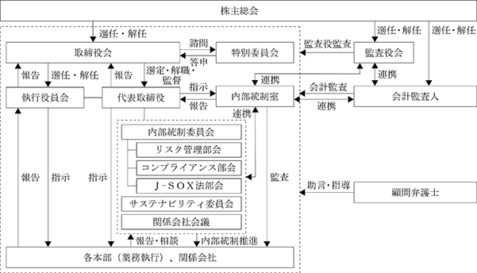

該当事項はありません。
該当事項はありません。
③ 【その他の新株予約権等の状況】
該当事項はありません。
該当事項はありません。
(注) 2021年12月６日開催の取締役会決議及び2022年１月26日開催の臨時株主総会において、当社とマックスバリュ西日本㈱の株式交換を行うことを決議し、2022年３月１日付での効力発生に伴い、発行済株式総数48,565,394株、資本金が2,592百万円、資本準備金が87,855百万円増加しています。
2024年２月29日現在
(注) １ 自己株式26,629株は、「個人その他」に266単元、「単元未満株式の状況」に29株含まれています。
２ 「役員向け株式交付信託」の信託財産として㈱日本カストディ銀行（信託口）が保有する株式170,500株は 「金融機関」に含まれています。また、㈱日本カストディ銀行（信託口）の保有分も「単元未満株式の状況」に50株含まれています。
2024年２月29日現在
(注) ㈱広島銀行の所有株式数には、退職給付信託の株式数を含めています。
2024年２月29日現在
(注) １ 「完全議決権株式(自己株式等)」欄の普通株式は、すべて当社保有の自己株式です。
２ 「完全議決権株式(その他)」欄の普通株式には、「役員向け株式交付信託」の信託財産として㈱日本カストディ銀行(信託口)が保有する株式170,500株(議決権の数1,705個)が含まれています。
３ 「単元未満株式」欄の普通株式には、当社所有の自己株式29株と、「役員向け株式交付信託」の信託財産として㈱日本カストディ銀行(信託口)が保有する50株が含まれています。
2024年２月29日現在
(注) 「役員向け株式交付信託」の信託財産として㈱日本カストディ銀行(信託口)が保有する株式170,550株については、上記の自己株式等に含まれていません。
(8) 【役員・従業員株式所有制度の内容】
１．役員向け株式交付信託の概要
当社は、2017年５月18日開催の第50回定時株主総会決議に基づき、2017年７月10日より、当社取締役(社外取締役及び非常勤取締役を除く。)及び監査役(非常勤監査役を除く。)(以下「取締役等」という。)に対する株式報酬制度(以下「本制度」という。)を導入しています。
本制度は、当社が金銭を拠出することにより設定する信託が当社株式を取得し、当社が各取締役等に付与するポイントの数に相当する数の当社株式が信託を通じて各取締役等に対して交付されるという、株式報酬制度です。また、取締役等が当社株式の交付を受ける時期は、原則として取締役等の退任時です。
なお、2022年３月１日以降、対象者に一部の子会社の役員も含んでいます。
２．取締役及び監査役に取得させる予定の株式の総数
当社は、本制度により当社株式を取締役等に交付するのに必要な当社株式の取得資金として、373百万円を拠出し、当社株式172,300株を取得しています。
３．当該役員株式所有制度による受益権その他の権利を受けることができる者の範囲
本制度は、株式交付規程に基づき株式交付を受ける権利を取得した当社の取締役等を対象としています。
該当事項はありません。
該当事項はありません。
(注) 当期間における取得自己株式には、2024年５月１日から有価証券報告書提出日までの単元未満株式の買取請求による株式数は含めていません。
(注) １ 当期間における保有自己株式数には、2024年５月１日から有価証券報告書提出日までの単元未満株式の買取請求による株式数は含めていません。
２ 保有自己株式数には、「役員向け株式交付信託」の信託財産として㈱日本カストディ銀行(信託口)が保有する当社株式170,550株は含めていません。
当社グループでは、株主の皆様への適切な利益還元を行うことを経営の重要課題と位置付けています。企業体質を強化するために内部留保の充実などを勘案しながら、株主様への安定かつ永続的な利益還元に取り組みます。内部留保資金は、事業の効率化、活性化を図るための設備、デジタル、人材育成への投資、財務体質の確立、及び、大規模災害への備え等に充当し、経営基盤の充実のため有効に活用します。
次期の剰余金の配当については、年間30円を予定しています。
なお、当社は「取締役会の決議によって、毎年８月31日を基準日として中間配当をすることができる。」旨を定款に定めております。
当事業年度に係る剰余金の配当は以下のとおりであります。
当社は、経営理念を基礎として、持続的な成長と中長期的な企業価値向上を図るため、コーポレート・ガバナンスを経営上の重要課題と位置付け、その充実・強化に継続的に取り組んでおります。
・お客さまの豊かなくらしを実現するため、変化するお客さまニーズに対応した最適な価値創造を追求します。
・お客さま、地域社会、従業員、株主、取引先など、すべてのステークホルダーとの関わり、対話を大切にし、ともに発展しながら持続的な共生を目指します。
・経営の透明性を確保するため、会社に関する情報を適切かつ積極的に開示し、説明責任を果たします。
・取締役会による戦略的な方向付けと実効性の高い監督の下、迅速・果断な意思決定を行ってまいります。
・経営の効率性、公正性及び透明性を確保するため、常に最適なコーポレート・ガバナンスを追求し、その充実・強化に継続的に取り組みます。
当社は、企業統治の体制として監査役会設置会社を採用しています。
内部統制に関する会議体として、内部統制委員会、サステナビリティ委員会及び関係会社会議を設置しております。内部統制委員会は、代表取締役社長の山口普を委員長として、３か月に１回開催し、内部統制システムの基本方針の審議・立案、有効性の確認、コンプライアンス、リスク管理及びJ-SOX法対応にかかる方針・施策の決定、運用状況の確認を行っています。内部統制委員会のもとに、各施策を審議・立案・整備するコンプライアンス部会、リスク管理部会及びJ-SOX法部会を設置しています。サステナビリティ委員会は、サステナビリティ基本方針の審議・立案、目標・施策についての審議、立案、進捗管理を行っています。関係会社会議は、グループの経営方針、中期経営計画の共有、関係会社各社の中期、年度の経営計画の報告、進捗状況の確認等を行っています。
監査役会は、定款で定められた４名の監査役(うち社外監査役２名)で組織され、議長については決議によって監査役のなかから定めています。監査役会は原則として毎月１回開催し、各監査役は、監査役会が定めた監査の方針、業務の分担等に従い職務を執行するとともに、必要に応じて執行状況を監査役会に報告します。なお、監査役会の議長は、監査役（常勤）の松川健嗣が務めております。その他の構成員は、西松正人、寄井真二郎（社外監査役）、串岡勝明（社外監査役）であります。
また、主要な設置機関とは別に第三者のコーポレート・ガバナンス体制への関与として、複数の弁護士と顧問契約を結び、法律上の判断を必要とする場合、適時に指導、助言を受けます。
会計監査人とは、厳正な評価基準に基づき監査契約を締結し、公正不偏な立場で会計監査を受けるものとします。
コンプライアンス面では、健全な企業活動を継続していくために、法令及び各種規則、社会規範、企業倫理などを順守した企業活動を行うための社内体制の整備に積極的に取り組みます。なお、全従業者の業務遂行の指針として行動基準を策定し、その周知徹底を図ります。
取締役会は、代表取締役社長を議長とし、取締役９名(うち社外取締役３名)と監査役４名(うち社外監査役２名)で構成しています。取締役会は原則として月１回開催しており、個々の取締役の出席状況については次のとおりです。
（注）神尾啓治氏につきましては、2023年5月18日就任以降に開催された取締役会への出席回数を記載しております。
取締役会における具体的な検討内容として、経営理念等の確立、中期経営計画等を策定し、具体的な経営戦略等について建設的な議論を行っています。また必要に応じて日々連携をとり、経営方針の遂行状況のチェック、取締役の職務遂行の監督強化を図ります。なお、取締役会の議長は、代表取締役会長の尾﨑英雄が務めております。
執行役員会は、月２～３回開催し、取締役会の決定した経営の基本方針に基づき、取締役会より委任された業務執行にかかる重要な事項を審議、報告しており、業務執行の効率化、迅速化及び適正化を図る体制を構築しています。なお、執行役員会の議長は、代表取締役社長の山口普が務めております。その他構成員は、常勤取締役及び執行役員であります。

企業統治の体制として、社外取締役３名及び社外監査役２名を選任することによる監視機能の充実、また監査役会と代表取締役の定例意見交換、監査役会と内部統制室及び会計監査人との連携により、適法性及び妥当性の両面からの監査が担保されています。
社内規程に基づき、取締役会議事録、各種会議・委員会等の議事について議事録を作成し、主管部署において保管し、必要に応じて閲覧権限者に対しては閲覧に供することとしています。
議事録等の書類の持ち出し等についても、社内規程に基づき管理しています。
リスク管理に関する規程を策定するとともに、内部統制委員会を設置し、各部署における危機管理マニュアルを策定するなど、想定しうるリスクに対して、関係部署が委員会を構成し対応を図ることとしています。
取締役会を月１回開催し、取締役及び監査役が出席し、重要事項の決議を行うとともに取締役会の決議事項の執行状況のみならず業務執行全般について報告を受け、取締役の業務執行について監督する体制をとることとしています。
同行動基準を定め、内部統制委員会を設置し、コンプライアンスに関する啓蒙・研修活動を実施するとともに、ヘルプラインを設置し、取締役あるいは従業員の法令・規定違反に関して通報する体制を整備しています。
小売事業及び小売周辺事業を主な業務内容とする各社でグループを構成し、消費者の生活全般の快適さの向上をモットーに経営に当たることとしています。
(イ)当社グループ各社の取締役の職務の執行に係る事項の当社への報告に関する体制
当社グループは、事業会社ごとに定期的に関係会社のトップミーティングを開催し、経営情報の報告と重要案件についての意見交換を行うこととしています。
(ロ)当社グループ各社の損失の危機の管理に関する規程その他の体制
当社グループ各社は、リスク管理について定める規程を策定するとともに、定期的に関係会社管理担当者会議において、当社グループ全体のリスク管理や当社グループ各社において想定しうるリスクに対する対応策に関する情報交換を行い、当社への報告体制をとることとしています。
(ハ)当社グループ各社の取締役の職務の執行が効率的に行われることを確保するための体制
当社グループは、関係会社管理規程を策定し、当社におけるグループ各社の管理基準及び当社グループ各社が遵守すべき事項を明確化するとともに、当社グループ各社の取締役・監査役には、当社取締役あるいは使用人を派遣し、業務の適合性・適正性を確保することに努めることとしています。また、当社グループ各社においては、月１回取締役会を開催し、取締役及び監査役が出席し、取締役会の決議に基づく重要な業務執行状況のみならず業務全般について報告を受け、取締役の業務執行について監督する体制をとることとしています。
(ニ)当社グループ各社の取締役及び使用人の職務の執行が法令・定款に適合することを確保するための体制
当社グループは、四半期毎に内部統制委員会を開催し、当社グループ各社におけるコンプライアンスに関する啓蒙・研修活動の実施を図り、当社取締役会への報告体制をとることとしています。また、ヘルプラインを設置し、当社グループ各社の取締役あるいは使用人の法令・規定違反に関して通報する体制を整備しています。
監査役の業務を補助すべき専任の使用人は特に設けておりませんが、必要に応じて関係部署から人員を派遣する体制をとり、人事評価あるいは経費負担等については、取締役その他の使用人から独立した制度として運用しております。また、監査役がその補助すべき使用人を必要とするときは、その業務に限定した期間、補助業務にあたる者を監査役会と協議の上、人選し配置します。監査役の補助業務にあたる者は、その間は取締役又は他の使用人の指揮命令を受けないものとし監査役の指示に従い職務を行うものとします。
7) 前号の使用人の取締役からの独立性に関する事項
監査役がその補助すべき使用人を選定した場合、その使用人の独立性を確保するため、補助すべき使用人の人事評価については監査役の協議によって行い、人事異動、懲戒に対しては監査役会の事前の同意を得るものとします。
(イ)当社取締役・使用人が監査役に報告するための体制その他の監査役への報告体制
取締役及び従業員は、会社に重大な損害を及ぼすおそれのある事実がある場合は、速やかに主管部署及び監査役に報告する体制を整備することとしています。
(ロ)当社グループ各社の取締役・監査役及び使用人又は報告を受けた者が監査役に報告するための体制その他の監査役への報告体制
当社グループ各社の取締役・監査役及び使用人又は報告を受けた者は、会社に重大な損害を及ぼすおそれのある事実がある場合は、速やかに当社グループ各社の主幹部署及び監査役に報告する体制を整備することとしています。また、年６回監査役連絡会を開催し、当社グループ各社の監査役が出席し、各社の状況報告をする体制をとることとしています。
当社グループは、ヘルプラインを設置する等、当社及び当社グループ各社の監査役へ報告を行った取締役及び使用人に対し、報告をしたことを理由として不利な取り扱いを行うことを禁止しています。
当社グループは、当社及び当社グループ各社の監査役が職務の執行について生ずる費用の前払い等の請求をした場合、その費用が監査役の職務の執行に必要でない場合と認められた場合を除き、速やかに費用を処理することとしています。
監査役は、各種会議・委員会に出席するとともに報告を受ける権限を有し、公認会計士から会計監査内容について説明を受け、監査に立ち会う等により、監査の実効性確保を図ることとしています。
当社は、会社法第427条第１項の規定により、社外取締役の北福縫子（横山ぬい）、大塚ひろみ（渡瀬ひろみ）及び石橋三千男並びに社外監査役の寄井真二郎との間で、同法第423条第１項の賠償責任を限定する契約を締結しています。ただし、当該契約に基づく賠償責任限度額は、法令に定める最低責任限度額としています。
⑤ 役員等賠償責任保険契約の内容の概要
(イ)被保険者の範囲
当社及び当社の子会社を含む取締役、監査役ほか重要な使用人
(ロ)保険契約の概要
当社は、会社法第430条の３第１項に規定する役員等賠償責任保険（Ｄ＆Ｏ保険）契約を保険会社との間で締結しています。当該保険契約では、当社が負う有価証券損害賠償費用、訴訟費用、不祥事が生じた際の社内調査費用等に加え、被保険者が会社の役員等の地位に基づき行った行為（不作為を含みます）に起因して損害賠償請求がなされたことにより被保険者が被る損害賠償費用、訴訟費用等が補填されることになります。
ただし、当該保険契約では免責額を設け当該免責額までの損害は補填の対象としていません。なお、保険料は全額会社負担としています。
当社の取締役は11名以内とする旨定款で定めています。
当社は、取締役を選任する株主総会の決議を、議決権を行使することができる株主の議決権の３分の１以上を有する株主が出席し、その議決権の過半数をもって行う旨及び累積投票によらない旨定款に定めています。
当社は、株主への安定的な利益還元を行うため、取締役会の決議によって、中間配当をすることができる旨定款に定めています。
当社は、自己の株式の取得について、経済情勢の変化に対応した機動的な資本政策の遂行を可能とするため、会社法第165条第２項の規定により、取締役会の決議によって市場取引等により自己の株式を取得することができる旨定款に定めています。
当社は、株主総会の円滑な運営を行うため、会社法第309条第２項に定める株主総会の特別決議要件について、議決権を行使することができる株主の議決権の３分の１以上を有する株主が出席し、その議決権の３分の２以上をもって行う旨定款に定めています。
男性
(注) ※所有する株式数には、株式報酬制度に基づく交付予定株式を含めています。
１ 取締役の北福縫子(横山ぬい)、大塚ひろみ(渡瀬ひろみ)及び石橋三千男の３名は、社外取締役です。
２ 監査役の寄井真二郎及び串岡勝明の２名は、社外監査役です。
３ 取締役の任期は、2024年２月期に係る定時株主総会終結の時から2025年２月期に係る定時株主総会終結の時までです。
４ 2022年２月期に係る定時株主総会終結の時から2026年２月期に係る定時株主総会終結の時までです。
５ 前任者の退任に伴う就任であるため、当社の定款の定めにより、前任者の任期満了の時までとなります。前任者の任期は、2026年２月期に係る定時株主総会終結の時までです。
社外取締役及び社外監査役
当社の社外取締役は３名、社外監査役は２名を選任しています。また、会社と社外取締役及び社外監査役との間に人的関係、資本的関係または重要な取引関係、その他において当社との間に特別な利害関係はありません。
社外取締役の北福縫子(横山ぬい)氏は、長年にわたる出版事業や企業ブランディング、地域活性化事業を通してマーケティングに関して豊富な知識と経験があり、専門的な識見を有していることから、当社の持続的な成長と中長期的な企業価値の向上に寄与することができると判断し、引き続き社外取締役に選任しています。大塚ひろみ(渡瀬ひろみ)氏は、株式会社リクルートにおいてプロジェクト・リーダー、編集長、事業責任者等を歴任し、2014年６月からは株式会社ぱどの代表取締役社長を務めるなど、新規事業の立ち上げや会社経営について豊富な経験と知見を有しています。また、2016年５月から2022年５月までマックスバリュ西日本株式会社において社外取締役を務めていました。これらのことから当社の中長期的な企業価値の向上を目指すにあたり、業務執行に適切な助言をいただくことができると判断し、社外取締役に選任しています。石橋三千男氏は、公認会計士及び税理士の資格を有しており、財務及び会計に関する相当程度の知見を有しています。当該知見を活かして特に財務及び会計についての専門的な観点から、取締役の業務執行に適切な助言・監督をいただけると判断し、社外取締役に選任しています。なお、北福縫子(横山ぬい)氏、大塚ひろみ(渡瀬ひろみ)氏及び石橋三千男氏は、一般株主と利益相反が生じるおそれがないことから、当社の独立性を有する社外取締役として適任であり、金融商品取引所の定めに基づく独立役員として指定しています。
社外監査役の寄井真二郎氏は弁護士として企業法務などに関する豊富な専門的知識を有しており、2009年５月から当社の社外監査役として、法務面のみならず多方面の視点から助言をいただいており、これらのことから職責を十分に果たしていただけると判断し、社外監査役に選任しています。また串岡勝明氏は、広島県庁では、新産業課長、産業革新プロジェクト担当課長、産業政策課長、商工労働局イノベーション推進チーム担当課長等を歴任され、官民ファンド「ひろしまイノベーション推進機構」の設立や各種のイノベーション推進施策の企画・運営等を担当されました。また、同庁退庁後は、広島大学の社会産学連携室特任教授、学術・社会連携室特命教授を歴任されるなど、この間に培った企画・政策立案や組織運営に関する専門的な知見及び豊富な経験を有しており、経営全般の監視や有効な助言をいただけると判断し、社外監査役に選任しています。なお、寄井真二郎氏及び串岡勝明氏は金融商品取引所の定めに基づく独立役員として指定しています。
当社は、独立社外取締役及び独立社外監査役になる者等について、金融商品取引所が定める独立性基準に加え、次の独立性等基準によるものとします。社外取締役・社外監査役(候補者含む)が以下の1)～4)に該当しない場合、当該社外取締役・社外監査役に独立性があるものと判断します。また、社外取締役・社外監査役を含む取締役・監査役の兼任会社数として、5)によるものとします。
親子会社・関連会社と同程度の影響を与え得る取引関係がある取引先の業務執行者。
法律、会計または税務等の専門家として、当社からの報酬または支払いが、個人の場合は、過去３事業年度の平均で１事業年度あたり1,000万円以上となる場合。法人等の場合(個人が所属する場合)は、過去３事業年度の平均で当社の営業収益の２％以上となる場合。
業務執行者として在職する非営利団体に対する当社からの寄付金が過去３事業年度の平均で１事業年度あたり1,000万円または当該団体の年間総費用の30％のうち、いずれかの大きい額を超える場合。
２親等以内の親族が、上記1)から3)または当社もしくは当社子会社の重要な業務執行者として在職している場合、または過去５年間において在職していた場合。
上場会社の役員(取締役、監査役または執行役)の兼任は、当社のほかに４社以内とします。
(3) 【監査の状況】
（監査役監査の組織・人員）
当社の監査役は常勤監査役１名、非常勤監査役３名の合計４名であり、監査役４名中の２名が社外監査役であります。監査役会では、最低１名は財務及び会計に関する知見を相当程度有する者を含むこととしており、また社外監査役については高度な専門性又は企業経営に関する高い知見を有する者を選任しております。
（監査役及び監査役会の活動状況）
各監査役は、独立の立場から取締役の職務執行を監査することにより、当社の健全で持続的な成長を確保し、社会的信頼に応える良質な企業統治体制の確立と運用を基本的な監査視点とする方針の基で活動を行っています。
当事業年度において開催された監査役会への各監査役の出席状況については次のとおりです。
監査役会は原則毎月開催とし、年12回開催を予定しております。その他、必要に応じて随時開催しております。当事業年度においては年14回開催し、平均所要時間は約90分/1回でした。
ⅰ）常勤監査役の活動状況
常勤監査役の活動としては、年間の監査計画に基づき、取締役会等の重要な会議への出席、内部統制室及び会計監査人との情報交換・意見交換を定期的に行い、四半期監査報告等の説明聴取、店舗往査実施等により得た情報を監査役会にて各監査役と共有しています。
ⅱ）社外監査役の活動状況
取締役会及び監査役会に出席し、取締役の職務執行状況の確認、常勤監査役から得た情報の共有化を図り、必要に応じて意見表明を行っています。また、内部統制室及び会計監査人からの報告聴取を受け、適宜助言、意見表明をしています。
ⅲ）監査役会の主たる活動状況
監査役会は、年間を通じて主に以下の決議及び審議・協議・報告を実施しています。
決議・協議13件：監査方針・監査計画・職務分担、常勤監査役の選定、監査役会議長、特定監査役の選定、
監査役報酬協議、会計監査人報酬の同意、会計監査人の再任に関する同意、監査報告書作成・
提出等
審議・報告37件：監査計画案、会計監査人の報酬同意の審議、株主総会議案内容の
確認検討、取締役の職務執行状況確認、会計監査人との監査方針・監査計画、四半期レビュー
報告、監査の結果報告・情報交換実施等
また、代表取締役社長との面談実施（年2回開催）、代表取締役副社長との面談実施(年１回)、その他取締役等との意見交換を随時実施し、職務執行状況の確認、会計監査人との情報・意見交換（年５回）を実施しました。特に財務諸表監査における監査上の主要な検討事項であるＫＡＭ（Key Audit Matters）に関する会計監査人との対応手続については、財務部門とも連携し検討を重ね、当社に及ぼすリスク確認、選定項目の絞り込み、選定項目を決定し、会計監査人の監査計画に沿って、四半期監査報告時の内容確認・更新等、リスクの評価、対応について説明聴取を実施し、対応手続の確認を行いました。
その他、グループ会社の連携としてグループ子会社との情報共有、意見交換を目的に監査役連絡会を年6回開催しております。
② 内部監査の状況
当社は内部統制監査部署として、内部統制室（事業会社兼任３名、専任１名）を設置しております。事業会社は各社長直轄の下、株式会社フジ・リテイリング内に内部監査・コンプライアンス推進室（専任５名）、マックスバリュ西日本株式会社内に経営監査室（専任15名）を設置し、関係法規あるいは社内ルールなどの遵守状況、業務執行の実態の確認により、その適切性および妥当性を監査しております。
また、リスクマネジメント体制やコンプライアンス遵守状況についても幅広く検証し、監査先部署への指摘あるいは改善指示などを行い、内部統制機能の強化に努めております。
内部統制室は各事業会社の監査計画に基づき実施した以下の内容について監査・評価を実施し、当社の代表取締役社長、監査役会に報告を行いました。
イ.店舗業務監査
ロ.本社監査
ハ.関係会社監査
ニ.財務報告に係る内部統制有効性評価
③ 会計監査の状況
会計監査については、有限責任監査法人トーマツと監査契約を締結し、会社法及び金融商品取引法に基づく監査を受けています。期中を通じて会計監査は実施されており、会計に関する問題について適切に処理できる体制となっています。なお、当社は監査法人及び当社監査に従事する業務執行社員との間に特別な利害関係はありません。
当事業年度における業務を執行した公認会計士の氏名、所属する監査法人及び監査業務に係る補助者の構成は次のとおりです。
業務を執行した公認会計士の氏名
（有限責任監査法人トーマツ)
指定有限責任社員 業務執行社員 公認会計士 中原 晃生
指定有限責任社員 業務執行社員 公認会計士 上坂 岳大
指定有限責任社員 業務執行社員 公認会計士 下平 雅和
監査業務に係る補助者の構成
公認会計士13名、その他16名
継続監査期間
17年間
(監査法人の選定方針と理由)
当社が有限責任監査法人トーマツを会計監査人としている理由は、当社の会計監査人の選定基準及び評価基準に従い、「専門性・独立性を有すること」、「適正な監査品質を維持する体制を有すること」から、適任であると判断しています。
(監査役及び監査役会による監査法人の評価)
監査役及び監査役会は、会計監査人から監査計画の説明及び四半期ごとの監査・レビューの結果報告、社内関係部署からの会計監査人の業務の遂行に関する報告により、会計監査人の監査方法・監査体制等を逐次、確認・評価しています。
また、会計監査人の解任または不再任の決定方針について、監査役会は、会計監査人が会社法第340条第１項各号に定める項目に該当すると認められるときは、監査役全員の同意に基づき、会計監査人を解任することとし、会計監査人の職務の執行に支障がある場合等、その必要があると判断したときは、会計監査人の解任または不再任を株主総会の会議の目的とすることとしています。
（監査公認会計士等に対する報酬）
（監査公認会計士等と同一のネットワークに対する報酬）
前連結会計年度
当社が監査公認会計士等と同一のネットワーク(デロイトトーマツ税理士法人)に対して報酬を支払っている非監査業務の内容は、法人税・消費税申告書作成業務です。
当連結会計年度
当社が監査公認会計士等と同一のネットワーク(デロイトトーマツ税理士法人)に対して報酬を支払っている非監査業務の内容は、法人税・消費税申告書作成業務です。
(監査報酬の決定方針)
監査法人に対する監査報酬の決定方針については、具体的な事項を定めるまでには至っていませんが、監査報酬の妥当性については、当社の規模や特性、監査日数等をもとに検討しています。
(監査役会が会計監査人の報酬等に同意した理由)
当社監査役会は、日本監査役協会が公表する「会計監査人との連携に関する実務指針」を踏まえ、監査計画の内容、職務遂行状況や報酬見積りの算出根拠などを確認し、検討した結果、会計監査人の報酬につき、会社法第399条第１項の同意を行いました。
(4) 【役員の報酬等】
(注) １ 取締役の報酬は、2021年５月20日定時株主総会決議による報酬限度額月額30百万円（社外取締役３百万円）以内です。
２ 監査役の報酬は、2021年５月20日定時株主総会決議による報酬限度額月額４百万円以内です。
連結報酬等の総額が１億円以上であるものが存在しないため記載していません。
(基本方針)
当社の取締役の報酬は、企業価値の持続的な向上を図るインセンティブとして十分に機能するよう株主利益と連動した報酬体系とし、個々の取締役の報酬の決定に際しては、役員報酬規程に基づき各職責を踏まえた適正な水準とすることを基本方針としています。具体的には、業務執行取締役の報酬は、固定報酬としての基本報酬及び株式報酬により構成しています。
また、監査役の報酬は、監査役会での協議により決定しています。
(基本報酬の個人別の報酬等の額の決定方針)
当社の取締役の報酬は、役員報酬規程に基づき、月例の固定報酬とし、役位、職責、在任年数に応じて他社水準、当社の業績、従業員給与の水準をも考慮しながら、総合的に勘案して決定しています。なお、取締役会は当事業年度に係る取締役の個人別の報酬等の内容の決定に当たっては、基本方針に基づき検討し、決定方針に沿うものであると判断しています。
(株式報酬制度について)
取締役等が当社の株式価値について株主の皆様と株価の変動による利益・リスクを共有することで、中長期的な業績の向上と企業価値の増大に貢献する意識を高めることを目的として導入しています。株式報酬制度については、株式交付規程に定められた役位ポイントに基づき、規定の有効期間中に毎年開催する定時株主総会後、最初に開催される取締役会の日に付与しています。
(業績連動報酬及び額又は数の算定方法の決定方針)
業績連動報酬等の支給については、行わないものとします。
(金銭報酬の額、業績連動報酬等の額又は非金銭報酬等の額の取締役の個人別の報酬等の額に対する割合決定方針)
業務執行取締役の種類別の報酬割合については、当社と同程度の事業規模や関連する業種・業態に属する企業の報酬水準を踏まえたうえで、取締役会において検討を行い、決定することとします。
基本報酬：60～100％ 株式報酬(株式交付信託)：０～40％
(取締役の個人別の報酬等の内容についての決定事項)
業務執行取締役の個人別の報酬額については、役員報酬規程に基づき、株主総会にて決議した報酬等の総額の範囲内において、代表取締役が各取締役の担当事業の業績を踏まえ、評価・決定する旨を取締役会で決議しています。
(非業務執行取締役報酬)
社外取締役には、原則として基本報酬を支給します。
(報酬限度額)
2021年５月20日の定時株主総会において次のとおり決議されています。
取締役の報酬等の額 月額30百万円(うち社外取締役３百万円)以内
監査役の報酬等の額 月額４百万円以内
2017年５月18日の定時株主総会において次のとおり決議されています。
株式交付 年間30,000ポイント(うち取締役27,000ポイント、監査役3,000ポイント)以内
(5) 【株式の保有状況】
当社は、取引先との信頼関係の維持・強化及び事業機会の創出・協業関係の構築を目的として保有する株式を、「保有目的が純投資目的以外の目的である投資株式」として区分しています。また、株式の価値の変動又は配当の受領によって利益を得ることを目的として保有する株式を、「保有目的が純投資目的である投資株式」として区分していますが、当社は純投資目的である投資株式は保有していません。
②
当社及び連結子会社のうち、投資株式の貸借対照表計上額（投資株式計上額）が最も大きい会社であるマックスバリュ西日本株式会社については以下のとおりです。
保有目的が純投資目的以外の目的である投資株式
取引先との良好な取引関係を構築し、事業の円滑な推進を図るため、取引先の株式を取得し保有することがあります。取引先の株式は、取引関係の強化、ひいては当社事業の発展に資すると判断する限り保有し続けますが、親会社株式会社フジの取締役会内において適宜見直しを行い、保有する意義の乏しい銘柄については適宜株価や市場動向を見て売却いたします。
特定投資株式
(注) １ 定量的な保有効果等取引先ごとの取引詳細に係る内容については個別性が強いため記載できませんが、取締役会において、株式保有に伴うコストやリスク、営業上の便益等の経済合理性を総合的に検証しています。
みなし保有株式
該当事項はありません。
③株式会社フジにおける株式の保有状況
当社及び連結子会社のうち、投資株式の貸借対照表計上額（投資株式計上額）が最大保有会社の次に大きい当社については以下のとおりです。
保有目的が純投資目的以外の目的である投資株式
ａ．保有方針及び保有の合理性を検証する方法並びに個別銘柄の保有の適否に関する取締役会等における検証の内容
当社は、経営戦略上において重要な協業及び取引関係の維持発展が認められる場合にのみ株式の保有を行います。また、保有の目的が希薄と考えられる政策保有株式は縮減していくという基本方針のもと、毎年、取締役会(当事業年度は2023年７月７日開催)で個別の政策保有株式について、保有の意義と経済合理性等を検証し、当社及び発行会社の企業価値を毀損すると総合的に判断した場合には、速やかに対応します。
ｂ．銘柄数及び貸借対照表計上額
ｃ．特定投資株式及びみなし保有株式の銘柄ごとの株式数、貸借対照表計上額等に関する情報
特定投資株式
（注）１定量的な保有効果等取引先ごとの取引詳細に係る内容については個別性が強いため記載できませんが、取締役会において、株式保有に伴うコストやリスク、営業上の便益等の経済合理性を総合的に検証しています。
２㈱三井住友フィナンシャルグループと大王製紙㈱の株式については、2023年７月13日に保有する全ての株式を売却しています。
みなし保有株式
該当事項はありません。
該当事項はありません。
該当事項はありません。